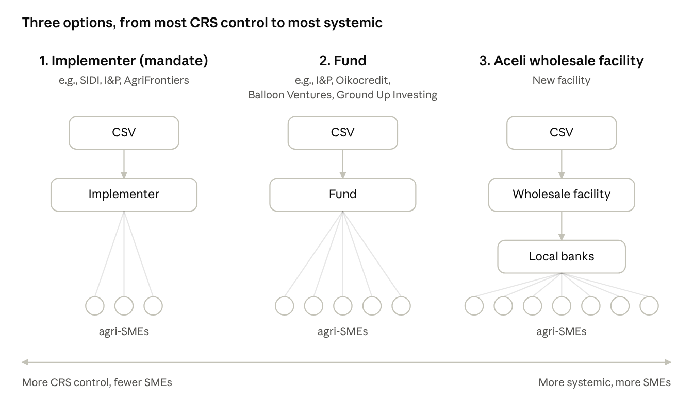
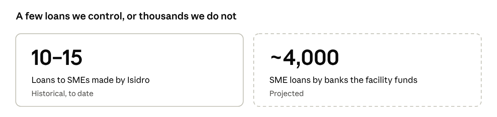
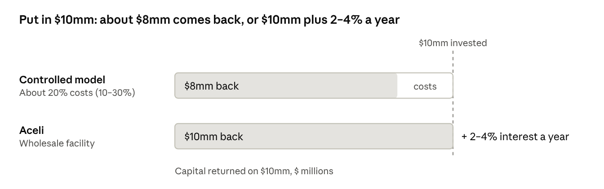
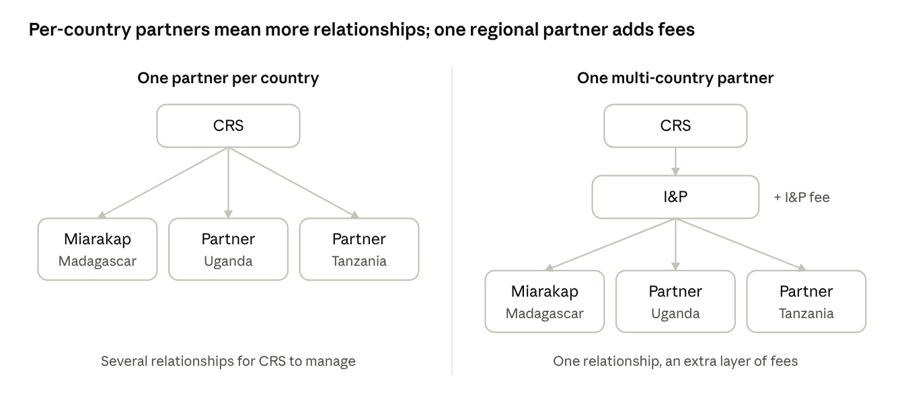
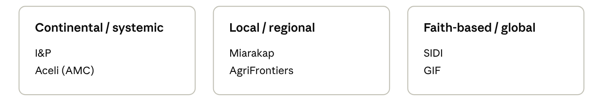
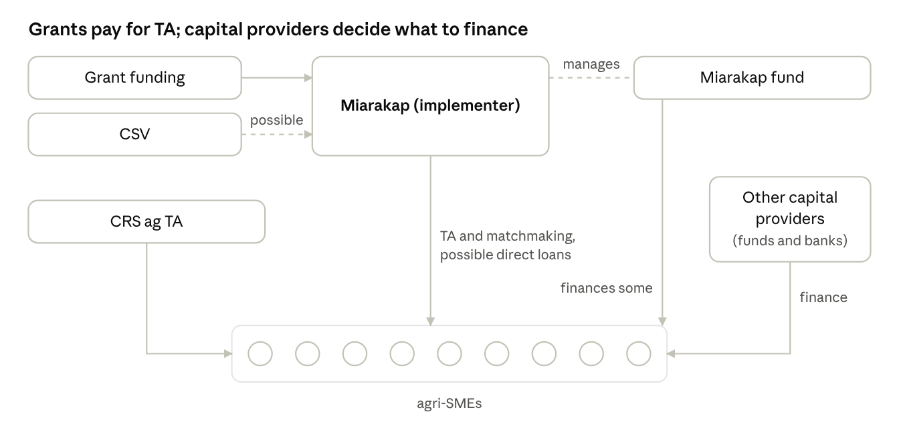

October 12, 2026 · Songbae
Archived snapshot of the October 12 version, saved before revision. Since then the RFP has been replaced by prioritized outreach to four or five partners; the text below is unchanged from the original. See the current version.
On October 6, Julie, Shaun, Jim and I summarized three options for financing Forest Flavors agri-SMEs and how CRS TA fits around whichever lender we use. We are not picking an option first: a two-stage RFP will help us choose.
The options differ in who ends up lending to the SME: an implementer CRS hires, a fund, or local banks through Aceli’s facility.

Aceli’s new wholesale facility is structurally a fund, but we list it separately because banks, not the fund, hold the SME relationship. Aceli’s new wholesale facility is separate from Aceli’s existing grant-funded model, which works with partner lenders. Direct lending by CRS (the Isidro model) and a reserve-only approach are not among the three options.
The options trade CRS control against scale, cost and admin burden. The RFP responses will show where each partner actually sits.


Aceli’s figure is net of its standard management fee (about 2%), which is deducted before capital and returns are repaid.
The question is whether we work with a separate partner in each country or one partner that covers several. Miarakap, for example, works only in Madagascar. I&P could cover several countries, including through Miarakap, but would charge its own fees on top.

We discussed six candidates, in three groups:

The RFP will likely go to a wider group than these six.
If we hire an implementer such as Miarakap, grant funding pays for it. Miarakap provides TA to agri-SMEs and matches them with other capital providers, both funds and banks, and its own fund may finance some of them. CSV could also provide Miarakap with investment capital to lend to SMEs directly. CRS provides ag TA alongside.

The immediate next step is drafting the RFP. We expect two stages: short concept notes from all applicants, then full proposals from a shortlist. The timing below is a proposal to confirm.
External conversations logged between April and September 2026.
| Date | Organization | People | Type | Takeaway |
|---|---|---|---|---|
| Apr 23 | Agri Frontier | Andrew Ritchie | Fund manager | Screens about 500 companies and works with about 50, aiming for 12 investments from its new fund. Went through I&P’s capacity-building program. |
| May 20 | Ground Up Investing | Mark Muckerheide | INGO investing arm | Sees commercially oriented, for-profit INGO subsidiaries as a possible future model for INGOs. |
| May 28 | MC Ingredients | Danny Hervol | Processor (potential borrower) | Interested in a $1mm, 5-year loan with 2 years interest-only. Dryers and sorters would raise quality and cut processing time. |
| Jun 2 | CFC | Hector Besong | Multilateral fund | About 750 applications led to fewer than 10 deals, a useful benchmark for pipeline conversion. Raising a new ag fund ($40mm first close). |
| Jun 3 | Miarakap | Tsilavina Reboza, Fanirisoa Pilaza, Koloina Ramaromandray | Fund manager and advisor | Launching the Mitsiry Biodiversity and Climate Fund, with Kinome providing TA. |
| Jun 4 | Ecotierra | Étienne Desmarais | Project developer | Plans separate funds: equity to build value chains, debt for working capital. |
| Jun 12 | Aceli | Brian Milder, Dan Barthmaier | Lender incentive facility | Designing a new fund, and could introduce CRS to its partner banks for TA. Transaction size, not fund size, drives break-even. |
| Jun 13 | Corus (formerly GUI) | Rick Kellett | INGO investing arm | GUI built companies (equity first, then debt) rather than running a lending operation. |
| Jun 17 | I&P | Raphael Dumont | Fund developer | Donor-funded, 0% “repayable advances” of €10k–$100k, paid in tranches. Narrow sourcing criteria make it harder to find deals. |
| Jun 24 | One Acre Ventures | Jeremy Golan | INGO investing arm | Only about half of deals come from One Acre Fund’s own network, despite aiming for all. High-value crops are capped at 5–10% of reach. |
| Jul 14 | Vula | Nic | Matching platform | Matches SMEs with 330 funders and has closed $635k across 14 deals. First step would be paying to load our historical data. |
| Jul 28 | Heifer Impact Capital | Kevin Gituma | INGO investing arm | Made 35 direct deals from $15mm. Winding down after its funder recalled the capital and internal friction with grant-side colleagues. Now works only through partners. |
| Sep 11 | GIF | Francesco Valente | Fund | Growth fund: $1mm minimum, about 10% USD pricing. A Core partnership costs 10–20% and comes with a decision-panel seat. |